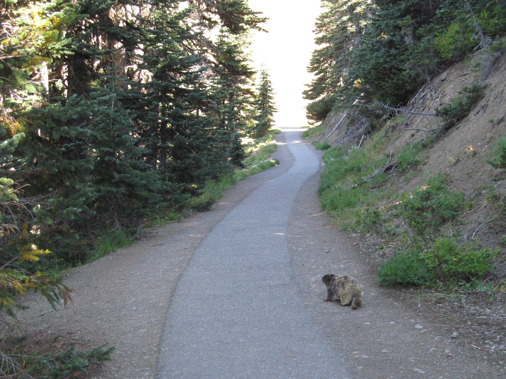

Hiking on Hurricane ridge is one of the main destinations for hikers, the trails as well maintained and there is some excellent scenary to enjoy

The Olympic Penisula offers endless outdoor adventures with opportunities for hunting, hiking, fishing and even hotsprings. Hurricane ridge is among the most populare destination for hiking and snow boardking as well as sking. Located just a few miles out of Port Angeles Hurricane ridge is one of our favortie places to hick with family and freinds.
Hiking:
Other Attractions:
There are several rivers to explore with plenty of access and Lake Crescent is near by.
Endless wildlife and vegetation
Located in the North West corner of Washington State is the Olympic Mountain Range lies the Olympic National Park. Whether you're a novice or an experienced hiker there's something in the Olympic National Forrest for you. Within the park, there's several miles of hiking trails, camp grounds and amazing scenery to explore.
Hurricane Ridge
Hurricane Ridge is located 18 miles from Port Angeles in the Olympic National Park. Day hiking along with skiing and snowshoeing are some of the other activities most of the year.

Day Hiking
Its not uncommon to come across several species of wildlife along any of the numerous trails. Don't be surprised to walk around any bend in a trail and stumble upon a black bear or in rare occasions a mountain lion. If you're lucky enough you may even get a few pictures of the wildlife.
Camping
Along most trails theres camping available. Some sites have services such as a port-o-potty and lockers to keep your food secure from the animals. Be sure to check your map and readthe information prived at the trailhead before your adventure.
The Hurricane Ridge Visitor Center is a great place to start. Located just before the end of the road, stop here for brochures, maps, snacks, and tips regarding your stay. It is open daily in the summer, and on Saturday/Sunday when the Hurricane Ridge Road is open during the remainder of the year.
Hurricane Ridge has a number of hiking trails, from ridgetop traverses to steep trails that descend to subalpine lakes and valleys. Obstruction Point Road (weather and snow permitting, open from July 4 through October 15), branches off right before the Hurricane Ridge Visitor Center, and provides access to a variety of trails as well.
During the winter months, snow enthusiasts enjoy the winter scenery, along with snowshoeing, cross-country skiing and sledding. Weather permitting, the Hurricane Ridge Winter Sports Club operates two rope tows and a Poma lift.
During the spring, wildflowers cover the ground of the subalpine meadows and blacktail deer are often spotted grazing. Sunrise and sunset on a clear day provide magnificent panoramic views of the park.
When to go
| Park | Hours |
|---|---|
| Mon-Fri | 8:00am-9:00pm |
| Weekends | Sun up to sun down |